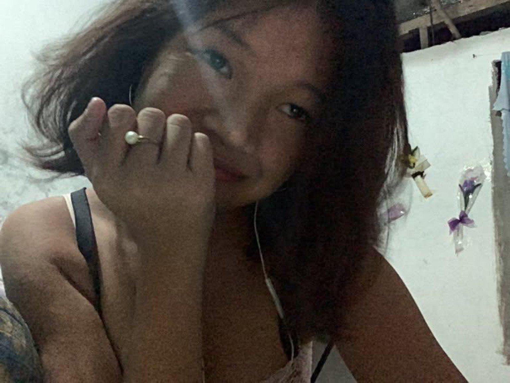
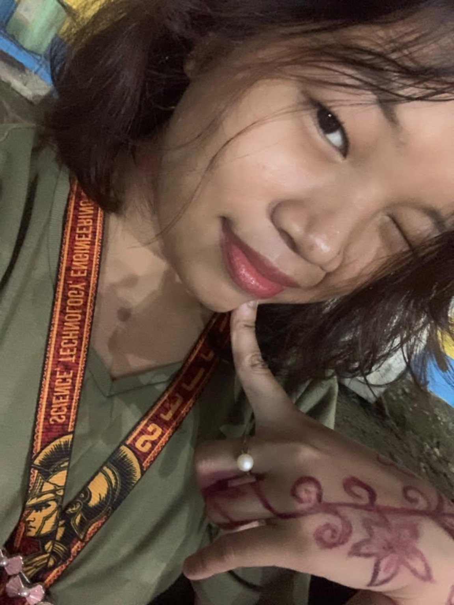
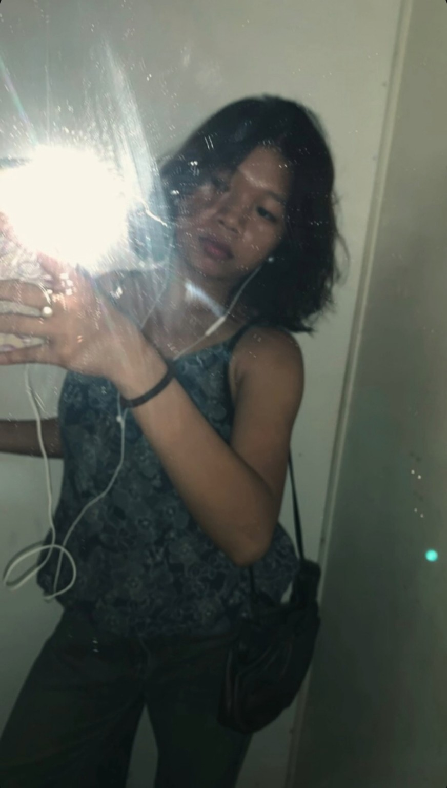
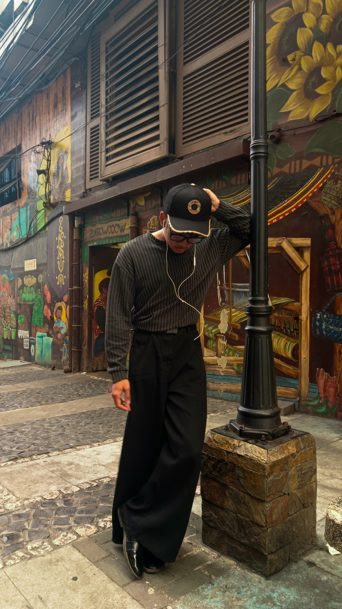
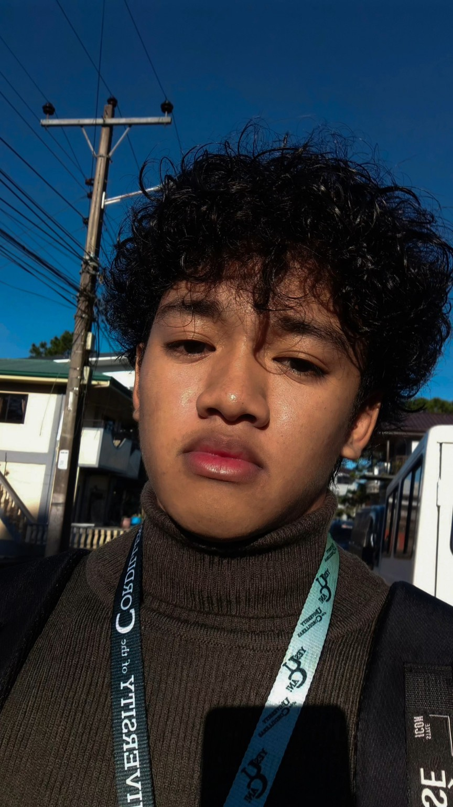
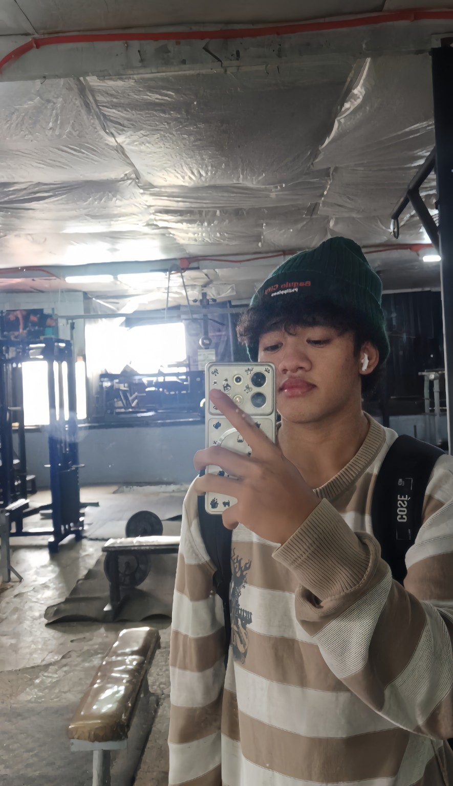

somewhere between purple & green
A world of you and me.
Even with miles between us, here's a tiny corner of the internet that keeps a little piece of each of us together.
✿
the purple side · 💜
Her little moments
Three little snapshots, all in one place.



💜 ✧ 💚
Different shades, same sky.
One of us is a little purple, one of us a little green — and somehow, they belong in the same picture.
the green side · 💚
His little moments
Three snapshots from the other side of the distance.



press play ♡
Our little theme song
For all the moments when words aren't quite enough.
About You
The 1975 · our song
Your song will appear here ♡